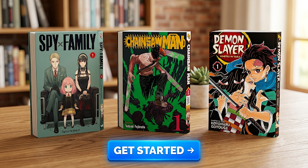

Discover Your Next Obsession
Manga isn't just one genre; it is an entire medium. To help you avoid choice paralysis, we have broken down the core demographics and curated a starter-friendly list tailored directly to what you already enjoy watching or reading.
The Big Three Categories:
Shonen (Action & Growth): Driven by high-energy battles, deep friendships, and overcoming impossible odds. Perfect for fans of superhero movies or adventure stories. Top Starter Pick: Demon Slayer.
Shojo (Romance & Emotion): Focused heavily on interpersonal relationships, personal growth, and emotional depth. Perfect for drama and romance lovers. Top Starter Pick: Fruits Basket.
Seinen (Mature & Complex): Written for older audiences, exploring philosophical themes, intricate plots, psychological thriller elements, or gritty realism. Perfect for fans of complex thriller novels or prestige TV dramas. Top Starter Pick: Monster.
Use our interactive style selector below to check off your favorite themes and instantly match with your perfect first volume!
